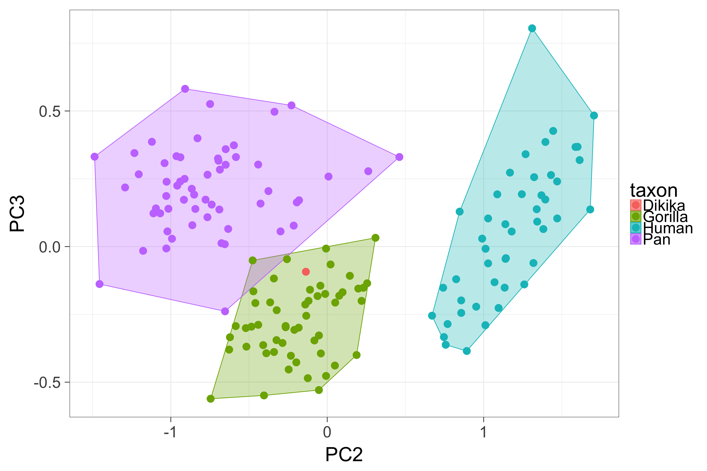

Homework #9 - Solution
7 pts total
Problem 1
A - 1pt
load this dataset on scapula morphology in Pan, Homo and Gorilla, and the Dikika fossil child. Details on this data can be found in Alemseged et al, 2006
scap <- read.table("http://hompal-stats.wabarr.com/datasets/DIK-scap.txt", header=TRUE)B - 1pt
Calculate the natural log of all the numeric variables
# log all the measurements, excluding the first row
scap[,-1] <- log(scap[,-1])C - 1pt
Perform a principal components analysis on the data, using the scale=TRUE argument.
PCA <- prcomp(scap[,-1], scale=TRUE)D - 1pt
Summarize the PCA, indicating what proportion of the variance is explained by each PC.
library(pander)
pander(summary(PCA))| PC1 | PC2 | PC3 | PC4 | PC5 | PC6 | PC7 | |
|---|---|---|---|---|---|---|---|
| SSFB | 0.2849 | -0.4794 | -0.3599 | 0.1391 | 0.006651 | -0.2841 | 0.2535 |
| TOTB | 0.3138 | -0.002348 | 0.1169 | 0.3155 | 0.08805 | -0.05833 | 0.2691 |
| SSFL | 0.3094 | -0.1715 | -0.02247 | -0.2185 | -0.3935 | -0.149 | 0.4956 |
| ISFB | 0.2838 | 0.4969 | 0.1318 | 0.3677 | 0.1642 | -0.08181 | 0.289 |
| MOL | 0.3122 | -0.0989 | -0.06965 | -0.2034 | -0.395 | 0.2112 | -0.2716 |
| SPL | 0.3127 | -0.07363 | 0.1511 | -0.1333 | -0.2372 | 0.3627 | -0.1467 |
| ISFL | 0.3067 | -0.1656 | 0.561 | 0.2791 | 0.04359 | 0.3501 | -0.07205 |
| PSSFB | 0.3056 | -0.1926 | -0.5038 | 0.2785 | 0.3962 | 0.2007 | -0.355 |
| PISFB | 0.2623 | 0.6335 | -0.4102 | -0.01389 | -0.283 | 0.07847 | -0.0721 |
| GFL | 0.3091 | 0.1018 | 0.05179 | -0.691 | 0.5992 | 0.08885 | 0.1662 |
| GFB | 0.3114 | 0.04893 | 0.2679 | -0.07613 | -0.007483 | -0.7307 | -0.5243 |
| PC8 | PC9 | PC10 | PC11 | |
|---|---|---|---|---|
| SSFB | -0.5254 | 0.1767 | 0.002452 | 0.2963 |
| TOTB | -0.1368 | -0.02837 | -0.06865 | -0.8249 |
| SSFL | 0.6084 | -0.04769 | 0.1707 | 0.04814 |
| ISFB | 0.002558 | -0.3757 | -0.2915 | 0.4202 |
| MOL | -0.03045 | -0.01236 | -0.7543 | -0.04605 |
| SPL | -0.3429 | -0.5621 | 0.4609 | 0.02856 |
| ISFL | 0.08873 | 0.5397 | 0.09695 | 0.2184 |
| PSSFB | 0.4317 | -0.1453 | 0.0852 | -0.009406 |
| PISFB | -0.117 | 0.4301 | 0.2635 | -0.04203 |
| GFL | -0.07756 | 0.1029 | -0.05026 | -0.0143 |
| GFB | 0.05098 | -0.01994 | 0.1052 | -0.009531 |
| PC1 | PC2 | PC3 | PC4 | PC5 | PC6 | |
|---|---|---|---|---|---|---|
| Standard deviation | 3.175 | 0.8487 | 0.2788 | 0.1932 | 0.1732 | 0.1418 |
| Proportion of Variance | 0.9164 | 0.06549 | 0.00707 | 0.00339 | 0.00273 | 0.00183 |
| Cumulative Proportion | 0.9164 | 0.9819 | 0.9889 | 0.9923 | 0.9951 | 0.9969 |
| PC7 | PC8 | PC9 | PC10 | PC11 | |
|---|---|---|---|---|---|
| Standard deviation | 0.1232 | 0.09186 | 0.07545 | 0.05686 | 0.04102 |
| Proportion of Variance | 0.00138 | 0.00077 | 0.00052 | 0.00029 | 0.00015 |
| Cumulative Proportion | 0.9983 | 0.999 | 0.9996 | 0.9999 | 1 |
E - 2pts
Make a beautiful plot (using ggplot) of PC1 versus PC2 and another of PC2 versus PC3. Make sure the points for each extant taxon are surrounded with a polygon to ease visualization.
## make taxon variable nicer to look at
taxon <- scap$Taxon
levels(taxon) <- c("Dikika", "Gorilla", "Human", "Pan")
## make a dataframe with just the PC coordinates and taxon
DFforPlot <- data.frame(PC1=PCA$x[,1], PC2=PCA$x[,2], PC3=PCA$x[,3], taxon=taxon)
gorilla <- subset(DFforPlot, taxon=="Gorilla")
pan <- subset(DFforPlot, taxon=="Pan")
human <- subset(DFforPlot, taxon=="Human")
ggplot(aes(x=PC1, y=PC2, color=taxon, fill=taxon), data=DFforPlot) +
theme_bw(30) +
geom_polygon(aes(x=PC1, y=PC2), alpha=.3, data=gorilla[chull(gorilla$PC1, gorilla$PC2),]) +
geom_polygon(aes(x=PC1, y=PC2), alpha=.3, data=pan[chull(pan$PC1, pan$PC2),]) +
geom_polygon(aes(x=PC1, y=PC2), alpha=.3, data=human[chull(human$PC1, human$PC2),]) +
geom_point(size=5)
ggplot(aes(x=PC2, y=PC3, color=taxon, fill=taxon), data=DFforPlot) +
theme_bw(30) +
geom_polygon(aes(x=PC2, y=PC3), alpha=.3, data=gorilla[chull(gorilla$PC2, gorilla$PC3),]) +
geom_polygon(aes(x=PC2, y=PC3), alpha=.3, data=pan[chull(pan$PC2, pan$PC3),]) +
geom_polygon(aes(x=PC2, y=PC3), alpha=.3, data=human[chull(human$PC2, human$PC3),]) +
geom_point(size=5)
F - 1pt
How do you interpret the first principal component? Justify your interpretation based on the variable loadings.
All of the variables load similarly and positively on the first PC. This is a common situation and reflects the size of the individual. This makes sense, as the most dramatic way that individuals vary from one another is in their size.